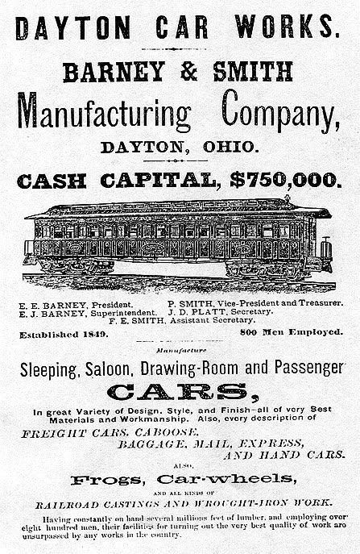
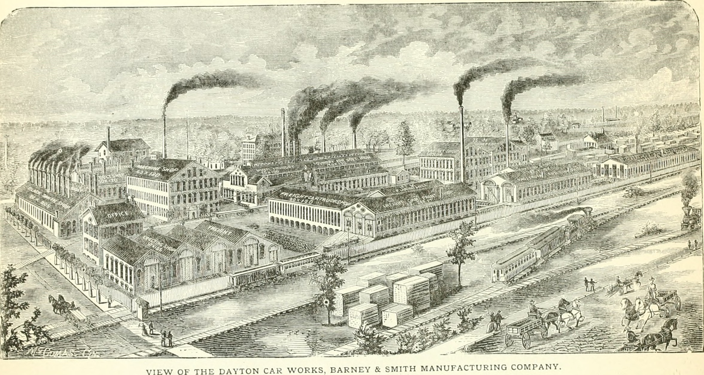

Barney & Smith Car Company
Barney & Smith was a railroad-car builder in Dayton, Ohio. Its connection to Barney, Georgia, is often told as a naming story, but the surviving evidence supports a more careful account. Later Georgia histories say the Oglesbys named their new station for a principal of the Ohio company because they bought cars from it. No contemporary railroad minute, equipment ledger, postal form, or 1897 newspaper article located in this research confirms that explanation. What the records do prove is that the company had business ties to the Oglesbys by October 1897, sold cars to several railroads serving Georgia, and later controlled a large lumber and short-line railroad operation at Milltown, about thirty miles east of Barney.[1][2]

From a canal-side shop to Barney & Smith
The business began in 1849, two years before a railroad reached Dayton. Eliam E. Barney and Ebenezer Thresher supplied the capital, while Elijah Packard brought car-building experience. Barney remained a silent partner until 1850 because he still had a year to serve as principal of Cooper Seminary. The first firm was Thresher, Packard & Company. It became E. Thresher & Company after Packard left, Barney, Parker & Company when Caleb Parker bought Thresher's interest in 1854, and Barney, Smith & Company when Preserved Smith replaced Parker in 1864.[3]
The early location was awkward but not irrational. Dayton had water power, canal transportation, and a central position in a region where railroads were spreading quickly. Before tracks entered the city, finished cars traveled by canal boat toward the Ohio River and then by steamboat or barge to a rail connection. The firm also made agricultural implements during its early years, but railroad equipment became its defining business.[3]
The partners incorporated the operation as the Barney & Smith Manufacturing Company on May 16, 1867, with authorized capital of $500,000. Capital rose to $750,000 in 1872 and $1 million in 1882. Eliam Barney remained the active head until his death in 1880. His son Eugene J. Barney then led the company until the end of 1899. On May 27, 1892, the concern reorganized as the Barney & Smith Car Company with $3.5 million in authorized stock. A 1906 increase brought authorized capital to $4.5 million.[3]
What the Dayton works made
Barney & Smith built wooden freight and passenger equipment, sleeping and dining cars, baggage and mail cars, narrow-gauge cars, streetcars, and interurban equipment. Passenger-car work involved much more than framing a box on wheels. The plant maintained drawing, pattern, upholstery, cabinet, paint, blacksmith, foundry, machine, estimating, and finishing departments. The company separated its drawing room from the pattern shop in 1883 and hired professional interior designers during the 1880s.[4]
William Voss, author of the 1892 book Railway Car Construction, became assistant superintendent that same year. The company's own history says systematic cost estimating began in 1885 and became a separate department in 1886. Those details place the firm inside the changing engineering and production practices of late nineteenth-century car building.[4]

The plant expanded repeatedly. It added a separate annex in 1886 and began planning a steel freight-car plant in December 1904. Ground was broken in March 1905, and the first steel cars left the new plant that December. Barney & Smith started taking orders for steel passenger cars late in 1909. After the steel plant finished its freight-car orders in the fall of 1910, it shifted to steel passenger-car work. By 1911 the Dayton property covered about 57 3/4 acres, contained about 85 buildings, and had roughly eight miles of standard-gauge track.[5]
The shift came late. Competitors had already moved aggressively into steel construction, and the company's 1911 history admits that the transition required a much larger drafting force, new sheet-metal machinery, and gas-welding equipment. Later railroad histories identify this delayed conversion as one reason the firm lost market share.[5][6]
Depression, adaptation, and labor
Railroad equipment was a cyclical business. Barney & Smith's internal history describes closed or nearly idle shops during the panics of 1857, 1873, and 1893. After 1893, when ordinary railroad-car demand remained weak, the company built electric street and traction cars to keep work moving. The Panic of 1907 brought another downturn that lasted into 1910.[5]
Expansion also changed the workforce. The steel plant needed large numbers of immigrant workers. In 1906 the Dayton Realty Company developed Kossuth Colony in North Dayton, with 80 dwellings, a clubhouse, and a store. A later Dayton account says about 200 Hungarian welders and steelworkers lived there and describes restrictive company-town conditions, including a surrounding fence and payment through company credit. That social history comes from a modern local account, not from the company's celebratory 1911 book, and should be read with that difference in mind.[5][7]
Georgia newspapers show that the works were still seeking skilled labor during World War I. Advertisements in 1916 requested wood boxcar repairmen, car builders, riveters, fitters, reamers, blacksmiths, and tinners. Similar ads appeared in 1917. They establish active hiring, though they do not by themselves identify the contracts that produced the demand.[8]
Cars used in Georgia
The newspaper trail reaches well beyond one South Georgia railroad family. Barney & Smith equipment worked on several railroads serving Georgia.
In March 1900, the Central of Georgia placed three new Barney & Smith sleeping cars in service. Numbered 19, 20, and 21, each had twelve sections, a drawing room, smoking room, and lavatories. They ran between Savannah and Macon and between Savannah and Atlanta. Three more twelve-section drawing-room buffet sleepers, numbered 25, 26, and 27, arrived in 1903 for Savannah, Macon, and Birmingham service.[9][10]
The Georgia Southern & Florida ordered a baggage car, a mail car, and four express cars in 1907. In January 1909 the Seaboard Air Line awarded Barney & Smith contracts for 200 fifty-ton steel phosphate cars and fifteen passenger cars. Later that year the Southern Railway ordered twenty-five electric-lighted coaches from the company.[11][12][13]
These orders document a broader Georgia market. They do not prove that the South Georgia Railroad bought the specific boxcars remembered in the Barney naming story. No builder's list or South Georgia Railroad equipment roster establishing that purchase was located.
The Oglesby order and the Barney name
The earliest direct connection found between Barney & Smith and the Oglesby businesses is an October 26, 1897, item in The Valdosta Times. It reported that the Oglesby mills at Heartpine and Barney were running full time on an order for one and a half million feet of passenger-car sills for the Ohio Falls Company, Pullman, and Barney & Smith. The sills ranged from 35 to 72 feet long.[2]
That is important evidence, but the timing sets a limit. Barney station was already appearing in the newspaper by June 1897. The October sill order therefore proves a business relationship, not why the station received its name. It also describes lumber sold to car builders, not railroad cars bought by the South Georgia Railroad.[14]
Huxford's Brooks County history, the Brooks County Museum binder, Georgia Place-Names, and Edmondson's later local account all preserve versions of the car-company naming tradition. Huxford says the Oglesbys named the station for one owner of the company from which their railroad bought equipment. The museum material tells a boxcar version. Edmondson adds an unverified visit by Mr. Barney to the Oglesbys in Quitman. These sources show that the tradition is old and repeated, but repetition among later accounts is not contemporary proof.[1]
The most defensible conclusion is simple: the town-name story is plausible, and an Oglesby relationship with Barney & Smith is documented in 1897, but the exact naming act and the claimed car purchase remain unverified.
Yellow pine and the Milltown purchase
Wooden cars consumed large quantities of seasoned lumber. Mid-Continent Railway Museum's restoration research on Milwaukee Lake Shore & Western coach No. 63, built by Barney & Smith in 1888, found yellow pine in parts of the surviving car. The museum also identified an earlier lumber relationship with Atlanta businessman George V. Gress. The evidence does not trace that coach's individual boards to South Georgia, but it confirms that southern yellow pine and Georgia suppliers belonged to the company's material network.[15]
Barney & Smith moved from buying lumber to controlling its own supply. On December 22, 1904, its executive committee discussed the need for secure yellow-pine timber and sent Arthur J. Stevens south to investigate. Stevens reported on February 28, 1905. The company then authorized purchase of the Gress Lumber Company operation at Milltown, Georgia.[5]
Contemporary Georgia newspapers reported the sale in mid-March. The package included the sawmill and planing mill, about 50,000 acres of timberland, the Milltown Air Line Railroad from Milltown to Naylor, four locomotives, and fifteen miles of tram road. Barney & Smith organized the Milltown Lumber Company to hold the operation. It bought another 36,000 acres in August 1907, bringing the reported total to about 86,000 acres.[5][16]
A 1906 promotional description of Milltown said the plant employed "an army of men" and shipped millions of feet of car material to Dayton each year. The wording is boosterish, but the basic flow of lumber from Milltown to the Ohio works agrees with the company's own history and other newspaper coverage.[17]
The railroad extension that did not reach Valdosta
Barney & Smith's Georgia railroad was the Milltown Air Line between Milltown and Naylor. It was not the South Georgia Railroad through Barney.
In late 1905 and 1906, Valdosta newspapers repeatedly discussed extending the Milltown line west to Valdosta, or toward Nashville and the Georgia Southern & Florida. Reports also floated a freight and flatcar shop in Valdosta. Citizens held a mass meeting, company representatives examined maps and routes, and officers came south to consider the plan. The stories document a serious proposal, not a completed extension or factory. The Milltown Air Line never became a Barney & Smith route through Barney.[18]
Sale, receivership, and the end of the Georgia operation
Barney & Smith sold the Milltown mills, timber, tram roads, and related holdings to Henderson Lumber Company in March 1917. Contemporary reports give the consideration as either $180,000 or $186,000. Because the two newspapers disagree, the exact figure should remain qualified. Henderson took over the mills, while the Barney & Smith interest in the Milltown Air Line later returned to the foreground.[19]
When the company tried to stop service and dismantle the short line in 1919, Milltown businesses and residents went to court. They argued that earlier promises of permanent rail service had induced large investments. Judge W. E. Thomas ordered continued operation while a jury resolved the dispute and provided for a receiver if the owners did not comply. The Georgia Supreme Court later allowed the order to stand. In November 1919, a Macon newspaper reported that Barney & Smith itself had entered receivership in Ohio, raising questions about the Georgia court's control of the railroad.[20]
The short line continued under court pressure until Barney & Smith sold it to W. L. Miller and R. E. Carter in August 1921. The buyers announced two daily round trips between Milltown and Naylor beginning September 1.[21]
Flood, receivership, and closure
The Great Dayton Flood inundated the works in March 1913. Contemporary Georgia coverage called the plant one of the city's heaviest industrial losers. A Dayton account says workers from Kossuth Colony tore down the colony fence and used the lumber for rescue rafts.[7][22]
The flood did not end the business on the spot. Hiring advertisements and equipment work continued later in the decade. The company nevertheless entered receivership by November 1919. Modern railroad histories disagree on the final marker. One gives 1921 as the end of active business and 1924 as the auction of remaining assets; another uses 1923 as the closing year. These dates probably describe different stages of failure, production, and liquidation. Without the corporate receivership and auction files, a single exact "closed" date would pretend to more precision than the evidence allows.[6][23]
What survives
Barney & Smith cars survive in museums and heritage collections, though some have been altered heavily during long service. Mid-Continent Railway Museum is restoring Milwaukee Lake Shore & Western coach No. 63. Northwest Railway Museum identifies its chapel car Messenger of Peace and several passenger cars as Barney & Smith products. Passenger Car No. 563, built in 1883, is interpreted at the Utah State Railroad Museum.[15][23][24]
The company's records appear to be scattered. The 1911 history preserves detailed internal chronology, but Mid-Continent's restorers report that original construction records for coach No. 63 have not survived. That gap helps explain why builder dates, materials, and individual railroad orders often have to be reconstructed from surviving cars, trade journals, railroad records, and newspapers.[15]
Findings for Barney history
The research supports five conclusions.
- Barney & Smith was a substantial Dayton builder with a documented corporate history from 1849 into the early 1920s.
- The company had a real Oglesby business connection by October 1897, but that evidence comes after Barney station was already in use and cannot prove the town's naming.
- Later histories consistently connect the town name to the company, so the tradition belongs in Barney's history with a clear label, not as a settled fact.
- Barney & Smith equipment served the Central of Georgia, Georgia Southern & Florida, Seaboard Air Line, and Southern Railway. No reviewed source proves a South Georgia Railroad car purchase.
- The company's direct Georgia ownership centered on Milltown beginning in 1905. It controlled a lumber company and the Milltown Air Line, not the South Georgia Railroad through Barney.
Sources and notes
- Folks Huxford, The History of Brooks County, Georgia, 1858-1948, pp. 388-389; Brooks County Museum Barney binder; Kenneth K. Krakow, Georgia Place-Names; Tad Evans, The Early History of Barney, Georgia, ch. 23. These are later histories, not contemporary records of the naming act.
- The Valdosta Times, October 26, 1897, p. 3, Newspapers.com image 889778923.
- Harry M. Estabrook, A History of the Barney & Smith Car Company of Dayton, Ohio (1911), "History of the Barney & Smith Company," parts one and two, HathiTrust record mdp.39015023079414; Dayton History Books transcriptions 1478214 and 1478231.
- Estabrook, "The Departments," Dayton History Books transcription 1479093; William Voss, Railway Car Construction (1892).
- Estabrook, "The Plants," Dayton History Books transcription 1479172.
- Adam Burns, "Barney & Smith Car Company: An Earlier Railcar Builder (1849-1923)", American-Rails.com, revised September 10, 2024.
- Calvary Cemetery Dayton, "Flood Story: The Fenced Colony and the Barney-Smith Car Company", April 4, 2013.
- The Atlanta Constitution, January 14 and 15, August 29-31, 1916; September 25 and 27, 1917, Newspapers.com images 34128542, 34129209, 26956317, 26956346, 26956376, 26906881, and 26907187.
- The Savannah Morning News, March 11, 1900, p. 6, Newspapers.com image 852602320; The Atlanta Constitution, March 12, 1900, p. 3, image 26828339.
- The Macon Telegraph, October 12, 1903, p. 8, Newspapers.com image 825982004.
- The Macon Telegraph, August 12, 1907, p. 6, Newspapers.com image 825318932.
- The Brunswick News, January 20, 1909, p. 1, Newspapers.com image 860002878.
- The Macon News, October 7, 1909, p. 6, Newspapers.com image 823274952; The Valdosta Daily Times, October 9, 1909, p. 1, image 889806884.
- Macon Telegraph, June 3, 1897, identifying Barney as a South Georgia Railroad station before the October sill report.
- Mid-Continent Railway Museum, Glenn Guerra, "How Did They Build This Thing?" and "Barney & Smith Manufacturing Company", restoration research for Milwaukee Lake Shore & Western No. 63.
- The Atlanta Constitution, March 16, 1905, p. 4, Newspapers.com image 26836106; The Valdosta Times, March 18, 1905, p. 7, image 889654001; The Macon Telegraph, March 19, 1905, p. 2, image 825463856.
- The Dublin Courier-Dispatch, May 25, 1906, p. 6, Newspapers.com image 1348863418.
- The Valdosta Daily Times, November 29, 1905, p. 4, Newspapers.com image 889772598; September 15 and 19, November 6, 1906, images 889688718, 889688838, and 889690819; The Atlanta Constitution, September 14, 1906, p. 2, image 26873226.
- The Atlanta Constitution, March 14, 1917, p. 4, Newspapers.com image 34211778; The Atlanta Journal, March 14, 1917, p. 6, image 970413890.
- The Valdosta Times, February 15 and 22, 1919, p. 8, Newspapers.com images 889146221 and 889146229; The Macon News, November 20, 1919, p. 3, image 823534951, and April 18, 1920, p. 7, image 823526287.
- The Macon Telegraph, August 28, 1921, p. 9, Newspapers.com image 825983904; The Macon News, August 30, 1921, p. 8, image 823522798.
- The Atlanta Journal, March 28, 1913, p. 5, Newspapers.com image 969982078.
- Northwest Railway Museum Blog, "Barney and Smith Car Company", May 17, 2009.
- Historical Marker Database, "Barney & Smith Passenger Car 563", marker 157186.
Image source: Internet Archive Book Images, "Barney and Smith Car Company, Dayton, Ohio, in 1875", from Ohio, the Future Great State; source-book page.